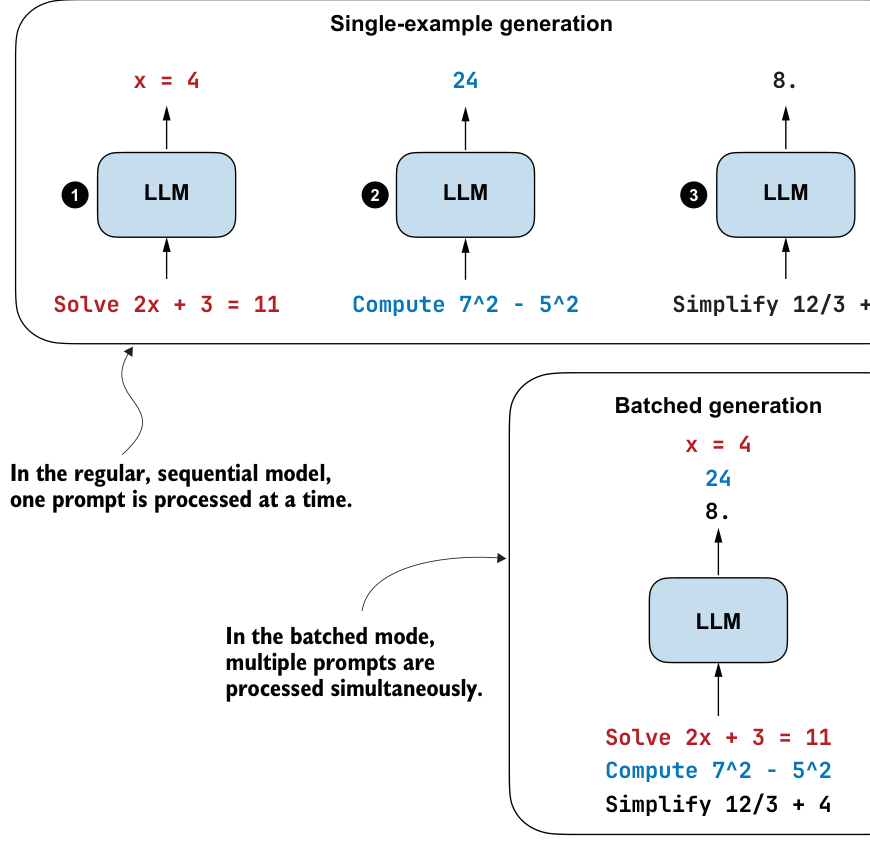

D.4Loading a larger reasoning variant
The same idea also works for larger reasoning-style Qwen3 models. The architecture for a given model size stays the same. Compared to the previous section, only the checkpoint and tokenizer settings change.
For example, to load the 4B reasoning variant instead of the 4B base variant, we would
- Switch the repository ID from
Qwen/Qwen3-4B-BasetoQwen/Qwen3-4B
Copy or rename the tokenizer.json file to tokenizer-reasoning.json- Initialize the tokenizer using the code in listing D.5
tokenizer = Qwen3Tokenizer(
tokenizer_file_path=tokenizer_path,
apply_chat_template=True,
add_generation_prompt=True,
add_thinking=True,
)These three tokenizer settings match the chat-style prompt formatting used by the reasoning models, as discussed in chapters 2 and 8. In other words, we still use the same
4B architecture configuration (QWEN3_CONFIG_4B), but we pair it with the reasoning checkpoint and the reasoning-style tokenizer behavior.
The rest of the model-loading and model-use code stays the same. We still download the snapshot, instantiate Qwen3Model(QWEN3_CONFIG_4B), load the weights via load_hf_ weights_into_qwen, move the model to the target device, and generate text using the same streaming function from chapter 2.
D.5Practical recommendations
The main point of this appendix is that the same from-scratch model code from appendix C can be reused across larger official Qwen3 checkpoints, provided that you select the matching configuration dictionary and tokenizer setup. This means moving to a larger model is mostly a matter of loading a different checkpoint and configuration rather than learning an entirely new concept.
If you want to experiment beyond the 4B example shown here, the 1.7B and 8B variants are natural next steps. The 1.7B model is a modest step up from 0.6B if 4B is too resource intensive for your hardware. The 8B model is substantially larger and may produce stronger outputs if your hardware can handle it.
appendix E Batching and throughput-oriented execution
In the code implemented through the book’s chapters, we usually processed one prompt or example at a time. This kept the code compact and easier to understand, and it also helped keep the resource requirements more manageable. The code in this book is already expensive to run, so adding batching support everywhere would often increase complexity without providing much real benefit, depending on your available hardware.
That being said, if you have access to relatively modern GPUs with enough memory, batched execution, illustrated in figure E.1, can be very useful. For example, if we want to evaluate many problems, sample several responses per prompt, or train on multiple examples at once, batching can help increase throughput and reduce the overall time required.
This appendix explains the broad idea behind batching and shows how you can use the batched implementations in the supplementary materials across various chapters.
E.1Why batching helps
When we talk about computational performance, it helps to separate the following overall goals:
- Latency: how quickly we get the answer for one prompt
- Throughput: how many prompts we can process in a fixed amount of time
Single-example generation is often best used for understanding the conceptual implementation of a concept, minimizing latency, and debugging. Batching can be seen
x = 4
24
8.Solve 2x + 3 = 11
Compute 7^2 - 5^2
Simplify 12/3 + 4
implify 12/3 +x = 4248.Solve 2x + 3 = 11
Compute 7^2 - 5^2
Simplify 12/3 + 4
as an extension of single-example generation that primarily targets throughput. For example, if we want to evaluate hundreds of problems on MATH-500, generate several self-consistency samples, or train on a larger distillation dataset, batching can reduce total runtime substantially on suitable hardware.
But batching is not automatically faster on every device. Small models on CPUs or less optimized GPUs may benefit only a little, or not at all, because they introduce additional code complexity, including padding and other overheads, that can offset the gains from batching parallelism.
Batching is best understood as a throughput optimization, not as a universal speedup.